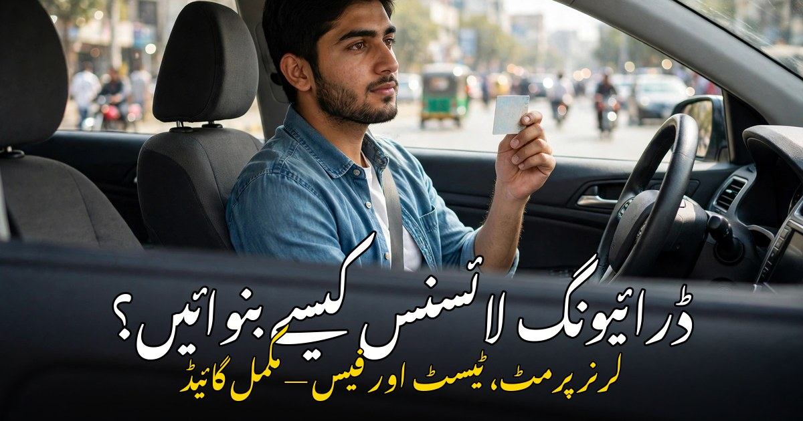

پنجاب میں ڈرائیونگ لائسنس کیسے بنوائیں؟ مکمل اردو گائیڈ

موٹر سائیکل ہو یا کار، بغیر لائسنس کے گاڑی چلانا قانوناً جرم ہے — اور حادثے کی صورت میں انشورنس اور قانونی تحفظ بھی نہیں ملتا۔ پنجاب میں ڈرائیونگ لائسنس بنوانا اب پہلے سے کہیں زیادہ آسان ہو گیا ہے: آن لائن اپلائی، خدمت مراکز اور ڈیجیٹل ٹریکنگ کی سہولت موجود ہے۔ مگر پھر بھی ہزاروں لوگ صرف اس لیے لائسنس نہیں بنواتے کہ انہیں طریقہ کار معلوم نہیں — کہاں جانا ہے، کون سی دستاویزات چاہییں، کتنی فیس لگے گی اور ٹیسٹ کیسے پاس ہوگا۔ اس مضمون میں پنجاب میں ڈرائیونگ لائسنس بنوانے کا پورا طریقہ، لرنر پرمٹ سے لے کر مستقل لائسنس تک، آسان اردو میں قدم بہ قدم بیان کیا گیا ہے۔
1۔ ڈرائیونگ لائسنس کیوں ضروری ہے؟
ڈرائیونگ لائسنس صرف ایک کاغذ نہیں — یہ اس بات کا سرکاری ثبوت ہے کہ آپ کو گاڑی چلانے کے قوانین اور عملی مہارت آتی ہے۔ بغیر لائسنس گاڑی چلانے پر ٹریفک پولیس بھاری جرمانہ کر سکتی ہے اور گاڑی بھی ضبط ہو سکتی ہے۔ بیرونِ ملک جانے پر بھی پاکستانی لائسنس کی بنیاد پر بین الاقوامی لائسنس بنتا ہے، اور بہت سی ملازمتوں — جیسے ڈرائیور، ڈیلیوری رائیڈر یا فیلڈ ورک — کے لیے لائسنس لازمی شرط ہے۔ لائسنس ایک سرکاری شناختی دستاویز کے طور پر بھی کام آتا ہے، اس لیے ہر اس شخص کو لائسنس ضرور بنوانا چاہیے جو باقاعدگی سے گاڑی چلاتا ہے۔
2۔ لائسنس کی اقسام — کون سا لائسنس آپ کو چاہیے؟
پنجاب میں لائسنس گاڑی کی قسم کے مطابق مختلف ہوتے ہیں، اس لیے درخواست دینے سے پہلے اپنی ضرورت طے کر لیں:
- موٹر سائیکل لائسنس: موٹر سائیکل اور اسکوٹر چلانے کے لیے — سب سے عام لائسنس
- کار / جیپ لائسنس (LTV): کار، جیپ اور ہلکی کمرشل گاڑی چلانے کے لیے
- HTV لائسنس: ٹرک، بس اور بھاری گاڑیوں کے لیے — پہلے LTV لائسنس ضروری ہوتا ہے
- لرنر پرمٹ: سیکھنے کے دوران گاڑی چلانے کی عارضی اجازت — یہ پہلا قدم ہے
زیادہ تر لوگ موٹر سائیکل اور کار دونوں کا لائسنس ایک ساتھ بنواتے ہیں — ایک ہی درخواست میں دونوں کیٹیگریز شامل کی جا سکتی ہیں، جس سے الگ الگ چکر لگانے کی ضرورت نہیں پڑتی۔
3۔ اہلیت اور درکار دستاویزات
لائسنس کے لیے درخواست دینے سے پہلے یہ شرائط پوری ہونی چاہییں: عمر کم از کم 18 سال ہونی چاہیے، آپ کے پاس درست کمپیوٹرائزڈ قومی شناختی کارڈ (CNIC) ہو، اور نظر اور صحت ٹھیک ہو۔ بعض صورتوں میں میڈیکل سرٹیفکیٹ بھی مانگا جاتا ہے۔ دستاویزات میں یہ چیزیں ساتھ لے جائیں: اصل شناختی کارڈ اور اس کی دو فوٹو کاپیاں، دو عدد پاسپورٹ سائز تازہ تصاویر، لرنر پرمٹ (مستقل لائسنس کے لیے)، اور فیس کی رسید۔ موبائل نمبر درست لکھیں کیونکہ ٹیسٹ اور لائسنس کی تمام معلومات اسی نمبر پر ایس ایم ایس کے ذریعے آتی ہیں۔
4۔ پہلا قدم: لرنر پرمٹ کیسے بنوائیں؟
لرنر پرمٹ ڈرائیونگ سیکھنے کی قانونی اجازت ہے، اور مستقل لائسنس سے پہلے یہ بنوانا لازمی ہے۔ پنجاب میں لرنر پرمٹ کے لیے اپنے ضلع کے ڈرائیونگ لائسنس دفتر، خدمت مرکز یا پولیس خدمت مرکز جائیں۔ آن لائن درخواست DLIMS — ڈرائیونگ لائسنس انفارمیشن مینجمنٹ سسٹم — کی ویب سائٹ سے بھی دی جا سکتی ہے، جہاں فارم بھر کر اپوائنٹمنٹ لی جاتی ہے۔ دفتر میں شناختی کارڈ کی تصدیق، تصویر اور فنگر پرنٹ لیے جاتے ہیں، معمولی فیس جمع کرائی جاتی ہے، اور عام طور پر اسی دن یا اگلے دن لرنر پرمٹ مل جاتا ہے۔ لرنر پرمٹ چھ ماہ کے لیے درست ہوتا ہے، اور اس کی مدت کے اندر مستقل لائسنس کے لیے ٹیسٹ دینا ہوتا ہے۔
5۔ تحریری ٹیسٹ — قوانین اور سائن بورڈ کی تیاری
لرنر پرمٹ کے 42 دن بعد آپ مستقل لائسنس کے لیے تحریری ٹیسٹ دے سکتے ہیں۔ یہ ٹیسٹ کمپیوٹر پر ہوتا ہے اور اس میں ٹریفک کے قوانین، سڑک کے سائن بورڈ، اشاروں اور حفاظتی اصولوں کے بارے میں سوالات پوچھے جاتے ہیں۔ تیاری کے لیے DLIMS کی ویب سائٹ اور ٹریفک پولیس کی جاری کردہ گائیڈ سے سائن بورڈ اور قوانین پڑھیں — سوال اسی نصاب سے آتے ہیں۔ خاص طور پر رفتار کی حد، اوور ٹیکنگ کے اصول، زیبرا کراسنگ، پارکنگ کے سائن اور ہنگامی صورتحال کے اقدامات پر توجہ دیں۔ ٹیسٹ میں پاس ہونے کے لیے مقررہ نمبر حاصل کرنا ضروری ہیں؛ اگر پہلی بار ناکامی ہو تو گھبرانے کی ضرورت نہیں — مقررہ وقفے کے بعد دوبارہ ٹیسٹ دیا جا سکتا ہے۔
6۔ عملی ڈرائیونگ ٹیسٹ — پاس ہونے کی اصل کنجی
تحریری ٹیسٹ پاس کرنے کے بعد عملی ڈرائیونگ ٹیسٹ ہوتا ہے، جس میں آپ کی گاڑی چلانے کی مہارت دیکھی جاتی ہے۔ موٹر سائیکل کے ٹیسٹ میں عام طور پر مقررہ راستے پر گاڑی چلا کر واپس آنا ہوتا ہے، جبکہ کار کے ٹیسٹ میں L-شکل کا راستہ — یعنی ریورس اور موڑ — پار کرنا ہوتا ہے۔ ٹیسٹ سے پہلے کچھ دن باقاعدہ مشق کریں: گیئر بدلنا، اشارے دینا، آئینوں کا استعمال، رفتار پر قابو اور پارکنگ کی مشق ضرور کریں۔ ٹیسٹ کے دوران پرسکون رہیں، جلدی نہ کریں اور ممتحن کی ہدایات غور سے سنیں — زیادہ تر ناکامیاں گھبراہٹ یا بے توجہی کی وجہ سے ہوتی ہیں، مہارت کی کمی سے نہیں۔ سیٹ بیلٹ باندھنا اور ہیلمٹ پہننا نہ بھولیں، کیونکہ یہ بھی ٹیسٹ کا حصہ ہے۔
7۔ مستقل لائسنس حاصل کرنا اور فیس
دونوں ٹیسٹ پاس کرنے کے بعد آپ کی درخواست مستقل لائسنس کے لیے منظور ہو جاتی ہے۔ فیس بینک یا مقررہ طریقے سے جمع کرائیں اور رسید سنبھال کر رکھیں۔ مستقل لائسنس عام طور پر پانچ سال کے لیے جاری ہوتا ہے، اور تیار ہونے کے بعد ڈاک کے ذریعے آپ کے پتے پر بھیجا جاتا ہے یا دفتر سے حاصل کیا جا سکتا ہے۔ لائسنس کی تیاری اور ترسیل کا اسٹیٹس DLIMS کی ویب سائٹ یا ایس ایم ایس سے چیک کیا جا سکتا ہے۔ نوٹ کریں کہ فیس اور طریقہ کار وقتاً فوقتاً تبدیل ہوتے رہتے ہیں، اس لیے درخواست دینے سے پہلے DLIMS کی ویب سائٹ یا اپنے ضلع کے لائسنس دفتر سے تازہ ترین فیس اور ضروریات ضرور معلوم کر لیں۔
8۔ لائسنس کی تجدید اور گمشدہ لائسنس
لائسنس کی مدت ختم ہونے سے پہلے اس کی تجدید کروا لینی چاہیے — مدت ختم ہونے کے بعد گاڑی چلانا بھی غیر قانونی ہے۔ تجدید کے لیے پرانا لائسنس، شناختی کارڈ اور فیس درکار ہوتی ہے، اور عام طور پر دوبارہ ٹیسٹ نہیں ہوتا۔ اگر لائسنس گم ہو جائے یا چوری ہو جائے تو پہلے متعلقہ تھانے میں رپورٹ درج کرائیں، پھر اس رپورٹ اور شناختی کارڈ کے ساتھ لائسنس دفتر سے ڈپلیکیٹ لائسنس کے لیے درخواست دیں۔ پتہ یا نام تبدیل ہونے کی صورت میں بھی لائسنس میں درستگی کروائی جا سکتی ہے — اس کے لیے نادرا کا تازہ شناختی کارڈ ساتھ لے جائیں۔
9۔ عام غلطیاں جن سے بچنا ضروری ہے
- لرنر پرمٹ کے بغیر گاڑی چلانا — یہ جرم ہے اور جرمانہ لگ سکتا ہے
- ٹیسٹ کی تیاری کے بغیر جانا — سائن بورڈ اور قوانین پڑھے بغیر ٹیسٹ میں ناکامی کا امکان زیادہ ہوتا ہے
- غلط یا پرانا موبائل نمبر دینا — ٹیسٹ اور لائسنس کی معلومات اسی نمبر پر آتی ہیں
- دلال یا ایجنٹ کو پیسے دینا — پورا طریقہ کار سرکاری اور شفاف ہے، کسی ایجنٹ کی ضرورت نہیں
- لائسنس کی مدت ختم ہونے کے بعد بھی گاڑی چلانا — تجدید وقت پر کروائیں
- ٹیسٹ میں جلد بازی کرنا — سکون اور توجہ ہی کامیابی کی کنجی ہے
ڈرائیونگ لائسنس بنوانا کوئی مشکل کام نہیں — بس طریقہ معلوم ہونا چاہیے۔ لرنر پرمٹ لیں، قوانین پڑھیں، ڈرائیونگ کی اچھی مشق کریں اور پھر ٹیسٹ دیں۔ ایک درست لائسنس نہ صرف آپ کو قانونی تحفظ دیتا ہے، بلکہ سڑک پر آپ اور دوسروں کی حفاظت کی ضمانت بھی ہے۔ اگر آپ نے ابھی تک لائسنس نہیں بنوایا تو آج ہی پہلا قدم اٹھائیں — لرنر پرمٹ کے لیے درخواست دیں اور ذمہ دار ڈرائیور بنیں۔